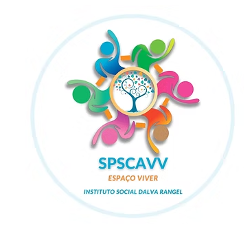

A violência contra crianças e adolescentes é uma realidade presente em diferentes regiões do Brasil. Conhecer os dados, compreender os sinais e divulgar informações corretas é fundamental para fortalecer a proteção e combater diferentes formas de violência.
A denúncia é uma das principais ferramentas de proteção de crianças e adolescentes vítimas de violência. Muitas situações permanecem escondidas durante anos, principalmente quando a vítima sente medo, vergonha ou ameaça. Em diversos casos, o silêncio acontece porque a criança não consegue compreender que está sofrendo violência ou acredita que não será acolhida ao pedir ajuda.
O Estatuto da Criança e do Adolescente (ECA) determina que toda criança e adolescente possui direito à dignidade, proteção, respeito e desenvolvimento saudável. A omissão diante de sinais de violência pode permitir a continuidade das agressões e causar impactos físicos, emocionais e sociais permanentes, comprometendo o desenvolvimento, a autoestima e a convivência social da vítima.
Por isso, órgãos públicos, escolas, serviços de saúde, conselhos tutelares e instituições sociais trabalham juntos para garantir acolhimento, proteção e atendimento adequado às vítimas. Além disso, a participação da sociedade é fundamental no combate à violência infantil, já que familiares, vizinhos, professores e amigos podem identificar mudanças de comportamento, sinais físicos ou emocionais que indiquem situações de abuso ou negligência.
Dados divulgados por órgãos oficiais demonstram a gravidade da violência contra crianças e adolescentes em território nacional.
Segundo dados do Ministério dos Direitos Humanos, milhares de denúncias envolvendo violência contra crianças e adolescentes são registradas anualmente através do Disque 100.
Grande parte das agressões ocorre dentro do ambiente familiar, praticadas por pessoas próximas da vítima, dificultando denúncias e pedidos de ajuda.
Crianças e adolescentes representam uma parcela significativa das vítimas de violência psicológica, física e negligência registradas no país.
O Disque 100 e plataformas de denúncia online funcionam 24 horas por dia para receber denúncias anônimas e encaminhar casos às autoridades.
Segundo o UNICEF e órgãos de proteção à infância no Brasil, como o Ministério dos Direitos Humanos e da Cidadania e o Conselho Tutelar, o combate à violência infantil depende da participação da sociedade, da informação e da conscientização.
Escolas possuem papel essencial na identificação de sinais de violência. Mudanças bruscas de comportamento, isolamento e queda no desempenho escolar podem indicar situações de risco.
O diálogo familiar, o acolhimento emocional e a escuta ativa ajudam crianças e adolescentes a se sentirem seguros para relatar situações de violência ou ameaça.
Campanhas educativas e conteúdos informativos ajudam a população a reconhecer sinais de abuso, negligência e violência psicológica, fortalecendo a prevenção.
Conselhos tutelares, serviços sociais, unidades de saúde e instituições públicas trabalham em conjunto para proteger vítimas e garantir atendimento adequado.
Especialistas alertam que os impactos da violência podem acompanhar crianças e adolescentes durante toda a vida.
Crianças vítimas de violência podem desenvolver ansiedade, depressão, medo constante e dificuldades emocionais.
Situações de violência frequentemente afetam a aprendizagem, a concentração e o rendimento escolar.
O isolamento social e dificuldades de relacionamento também podem surgir após experiências traumáticas.
O acolhimento familiar, escolar e psicológico é fundamental para recuperação e proteção da vítima.
Segundo o UNICEF, a violência contra crianças e adolescentes pode causar consequências físicas, emocionais e sociais que acompanham a vítima durante toda a vida. Problemas como ansiedade, depressão, dificuldades escolares, isolamento social e baixa autoestima estão entre os impactos mais frequentes identificados por especialistas. A instituição também destaca que a proteção infantil depende da participação conjunta da família, da escola, da comunidade e do poder público. O fortalecimento das redes de apoio, das campanhas educativas e dos mecanismos de denúncia é considerado fundamental para prevenir situações de violência, garantir acolhimento adequado e promover o desenvolvimento saudável de crianças e adolescentes.
O Ministério dos Direitos Humanos e da Cidadania reforça que denunciar casos de violência infantil é essencial para interromper ciclos de agressão, abuso e negligência. Segundo o órgão, muitos casos permanecem invisíveis por medo, silêncio ou falta de informação, dificultando a atuação das autoridades e da rede de proteção. O Ministério também destaca a importância do Disque 100, dos serviços de assistência social e das campanhas de conscientização voltadas à proteção da infância. Além disso, defende que a informação e a educação da sociedade são ferramentas fundamentais para identificar sinais de violência e garantir proteção rápida às vítimas.
Os Conselhos Tutelares possuem papel fundamental na garantia dos direitos da criança e do adolescente, atuando na proteção de vítimas de violência, negligência e abandono. Entre suas funções estão o recebimento de denúncias, o acompanhamento das famílias e o encaminhamento de casos para serviços de saúde, assistência social, escolas e órgãos de justiça. Além disso, os conselheiros tutelares trabalham em conjunto com diferentes instituições públicas para assegurar acolhimento, segurança e atendimento adequado às vítimas. A atuação preventiva, a orientação das famílias e a conscientização da população também fazem parte das ações desenvolvidas para fortalecer a proteção infantil.
Estatuto da Criança e do Adolescente (ECA) e materiais do Ministério dos Direitos Humanos.
Informações sobre violência infantil, desenvolvimento e proteção social.
Plataforma oficial de denúncias do Estado de São Paulo.
Informações sobre rede de proteção, justiça e Delegacia da Mulher.
A conscientização, a informação e a denúncia são fundamentais para combater a violência contra crianças e adolescentes. Toda denúncia pode representar uma vida protegida.
Voltar para Página Inicial